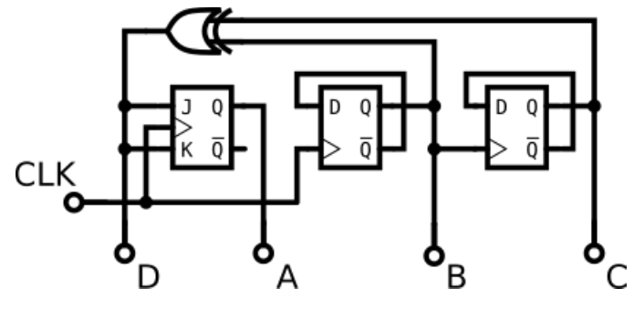
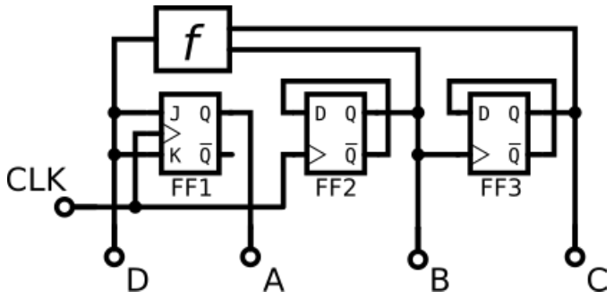
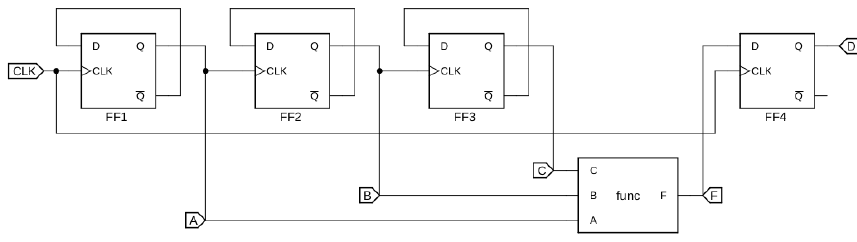
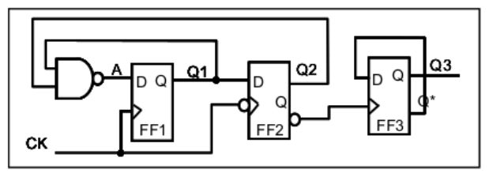
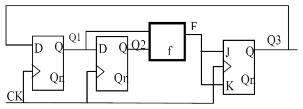

9. Registrlar, hisoblagichlar va holatlar mashinasi (FSM)
7-darsdan eslatma: D FF frontda D ni oladi; JK da J = K = 1 bo'lsa Q har frontda almashadi (toggle); toggle qiluvchi FF chastotani 2 ga bo'ladi. 8-darsdan: hamma narsa kechikadi, lekin bu darsda (masalalarda aytilganidek) kechikishlar nolga teng deb olamiz.
1. Registr: bir nechta bitni saqlash
Bitta FF 1 bit saqlaydi. Umumiy takt bilan ishlaydigan N ta FF to'plami registr (register) deyiladi va N bitli sonni saqlaydi.
Ma'lumot ikki xil yuboriladi:
- Parallel: N bit bir vaqtda, N ta simda. Tez, lekin sim ko'p. Chip ichida va plata ustida ishlatiladi.
- Ketma-ket (serial): bitlar bitta simda navbat bilan, har taktda 1 bit. Sekinroq, lekin sim bitta. Uzoq masofalarda ishlatiladi (USB, Ethernet, SATA).
Siljitish registri (shift register): FF lar zanjir bo'lib ulangan (Q1 → D2, Q2 → D3 ...). Har frontda bitlar bitta qadam oldinga siljiydi.
| Turi | Kirish → chiqish | Vazifasi |
|---|---|---|
| SISO | ketma-ket → ketma-ket | Signalni N takt kechiktiradi (3 ta FF → 3 taktdan keyin chiqadi) |
| SIPO | ketma-ket → parallel | Ketma-ket kelgan bitlarni parallel songa aylantiradi (masalan USB qabul qilish) |
| PISO | parallel → ketma-ket | Sonni bir zarbada yuklaydi (PL buyrug'i), keyin bitta-bitta chiqaradi |
| PIPO | parallel → parallel | Oddiy N bitli registr |
2. Asinxron (ripple) hisoblagich
Toggle qiluvchi FF lardan zanjir yasaymiz: birinchisi CK dan, keyingisi oldingisining chiqishidan takt oladi. Har bosqich chastotani yana 2 ga bo'ladi. Natijada chiqishlar birgalikda ikkilik sonda sanaydi (5-darsdagi ikkilik sanoq).
- N ta FF → 2N gacha sanaydi (0 dan 2N − 1 gacha), oxirgi chiqish chastotasi f / 2N.
- Keyingi FF ning takti oldingisining Q̄ (yoki tushuvchi fronti) dan olinsa, yuqoriga sanaydi (0, 1, 2, ...). Q dan va ko'tariluvchi frontdan olinsa, pastga sanaydi (0, 7, 6, 5, ...). Slaydda ham "count down: 11, 10, 01, 00" misoli bor.
- Kamchiligi: kechikishlar qo'shilib boradi. Bitta FF kechikishi Tpd bo'lsa, M-chi chiqish M·Tpd kechikadi. Chiqishlar har xil vaqtda o'zgaradi va o'tish paytida noto'g'ri sonlar paydo bo'lishi mumkin.
3. Sinxron hisoblagich
Sinxron (synchronous) hisoblagichda hamma FF bitta CK dan takt oladi. Qaysi FF almashishi kerakligini AND elementlari hal qiladi (masalan, 3-bit faqat Q1·Q2 = 1 bo'lganda almashadi).
- Hamma chiqishlar bir vaqtda, bir xil kechikish bilan o'zgaradi. Tezroq, lekin sxema murakkabroq.
- Fmax ni 8-darsdagi formula beradi: eng uzun yo'l oxirgi FF ga AND lar zanjiri orqali boradi. Slayddagi misol: 8 + 10 + 10 + 3 = 31 ns.
| Asinxron (ripple) | Sinxron | |
|---|---|---|
| Takt | Har FF ga har xil (oldingisidan) | Hammasiga bitta CK |
| Kechikish | Bosqich soniga bog'liq (M·Tpd) | Hammasida bir xil |
| Sxema | Oddiy | Murakkabroq (qo'shimcha AND lar) |
4. Ixtiyoriy modulli hisoblagich va FF soni
Modul (modulus) N degani hisoblagich 0, 1, ..., N−1 ni sanab yana 0 ga qaytadi. Masalan, modul 5: 0, 1, 2, 3, 4, 0, ... Buning uchun kombinatsion sxema N holatini (masalan 101) tanib, hamma FF ni reset qiladi.
Kerakli FF soni n: 2n ≥ N bo'ladigan eng kichik n| N (modul yoki holatlar soni) | FF soni | Nega |
|---|---|---|
| 8 | 3 | 2³ = 8 |
| 9 | 4 | 2³ = 8 yetmaydi, 2⁴ = 16 |
| 17 | 5 | 2⁴ = 16 yetmaydi, 2⁵ = 32 |
| 32 (bo'lgich) | 5 | 2⁵ = 32 |
Bu slayddagi takrorlash savollari: "modul 17 hisoblagich uchun nechta FF?" → 5; "9 holatli FSM uchun nechta FF?" → 4.
5. Holatlar mashinasi (FSM)
FSM (finite state machine, chekli holatlar mashinasi): sxemaning "holati" uning FF laridagi qiymatlar. Har taktda mashina bir holatdan keyingisiga o'tadi. Keyingi holat hozirgi holat va kirishlardan kombinatsion sxema (next state network) yordamida hisoblanadi.
Holatlar diagrammasi (state diagram): holatlar doiracha bilan, o'tishlar strelka bilan chiziladi. Strelka ustiga qaysi kirishda shu o'tish bo'lishi yoziladi.
Slayddagi mashq: JK flip-flopni FSM sifatida loyihalash. Kelgusi holat D = Q·K̄ + Q̄·J. Fmax esa 8-darsdagi formula bilan: Tckmin > TCK-Q + Tdmax + Tsu.
6. Vaqt diagrammasini chizish retsepti
Imtihon masalalarining ko'pi: "FF lar boshida 0. Birinchi N takt uchun signallarni chizing" yoki "signal chastotasini toping". Har doim shu tartibda ishlang:
- Sxemani o'qing. Har bir FF uchun yozing: D (yoki J, K) qayerdan keladi, takt qayerdan keladi (CK, ↑ yoki ↓, yoki boshqa FF chiqishi).
- Jadval tuzing. Ustunlar: takt raqami, har bir Q, kombinatsion signallar. 0-qator: boshlang'ich holat (hamma Q = 0), undan kombinatsion signallarni hisoblang.
- Har frontda: yangi Q larni frontdan oldingi qatordagi qiymatlardan hisoblang. Hammasi bir vaqtda o'zgaradi, shuning uchun yangi qiymatni darhol boshqa FF ga ishlatmang.
- Yangi Q lardan kombinatsion signallarni (NAND, XOR, f) qayta hisoblang.
- Jadval takrorlana boshlaguncha davom eting. Takrorlanish uzunligi = davr. Chastota = fCLK ÷ (davr, taktlarda).
7. Imtihon masalalari
2020-12 imtihoni, 1-masala (7 ball)

1-qadam, sxemani o'qish:
- FF2 va FF3: D = Q̄ (toggle). Ular 2 bitli asinxron hisoblagich: B = FF2 chiqishi, C = FF3 chiqishi. Yechimga ko'ra CB ketma-ketligi 00 → 01 → 10 → 11 → 00 (yuqoriga sanaydi).
- D = B XOR C.
- FF1 (JK): J = K = D, takti CLK. D = 1 bo'lsa frontda almashadi, D = 0 bo'lsa saqlaydi.
2-qadam, jadval (k-qator = k-frontdan keyingi takt):
| Takt | C | B | D = B⊕C | A |
|---|---|---|---|---|
| 0 | 0 | 0 | 0 | 0 |
| 1 | 0 | 1 | 1 | 0 |
| 2 | 1 | 0 | 1 | 1 (D edi 1 → almashdi) |
| 3 | 1 | 1 | 0 | 0 (D edi 1 → almashdi) |
| 4 | 0 | 0 | 0 | 0 |
| 5 | 0 | 1 | 1 | 0 |
| 6 | 1 | 0 | 1 | 1 (D edi 1 → almashdi) |
| 7 | 1 | 1 | 0 | 0 (D edi 1 → almashdi) |
| 8 | 0 | 0 | 0 | 0 |
3-qadam, chastotalar (fCLK = 1000 kHz):
- B har frontda almashadi → davri 2 takt → 500 kHz.
- C har 2 frontda almashadi → davri 4 takt → 250 kHz.
- A: 0, 0, 1, 0, keyin takrorlanadi → davri 4 takt → 250 kHz.
- D: 0, 1, 1, 0, keyin takrorlanadi → davri 4 takt → 250 kHz. Flash ADC D taktida ishlasa, sinusni uning yarim chastotasigacha o'zgartira oladi (Nyquist qoidasi, 16-darsda batafsil): 250 / 2 = 125 kHz.
Rasmiy javoblar: 500, 250, 250, 125.
2021-01 imtihoni, 5-masala (7 ball): o'sha sxema, XOR o'rniga f

| Takt | C | B | D = NOT(B+C) | A |
|---|---|---|---|---|
| 0 | 0 | 0 | 1 | 0 |
| 1 | 0 | 1 | 0 | 1 (D edi 1 → almashdi) |
| 2 | 1 | 0 | 0 | 1 |
| 3 | 1 | 1 | 0 | 1 |
| 4 | 0 | 0 | 1 | 1 |
| 5 | 0 | 1 | 0 | 0 (D edi 1 → almashdi) |
| 6–8 | ... A = 0 davom etadi, 9-taktda yana 1 | |||
- B: davri 2 takt → 1200/2 = 600 kHz.
- C: davri 4 takt → 300 kHz.
- A: 4 takt 1, 4 takt 0 → davri 8 takt → 1200/8 = 150 kHz.
- D: davri 4 takt → 300 kHz → flash ADC: 300/2 = 150 kHz.
Rasmiy javoblar: 600, 300, 150, 150.
2020-07 imtihoni, 1-masala (7 ball)

Sxemani o'qish: FF1, FF2, FF3 da D = Q̄ (toggle). FF2 takti Q1 dan, FF3 takti Q2 dan olinadi (↑ front) → 3 bitli asinxron pastga sanovchi hisoblagich. A = Q1, B = Q2, C = Q3. FF4: D = F, takti CLK. Demak D chiqishi F ni bir takt kechiktirib takrorlaydi.
| Takt | C B A (son) | F = Ā·B̄ + C̄ | D (shu taktda) = oldingi taktdagi F |
|---|---|---|---|
| 0 (boshlanish) | 000 (0) | 1 | 0 |
| 1 | 111 (7) | 0 | 1 |
| 2 | 110 (6) | 0 | 0 |
| 3 | 101 (5) | 0 | 0 |
| 4 | 100 (4) | 1 | 0 |
| 5 | 011 (3) | 1 | 1 |
| 6 | 010 (2) | 1 | 1 |
| 7 | 001 (1) | 1 | 1 |
| 8 | 000 (0) | 1 | 1 |
| 9 | 111 (7) | 0 | 1 |
F ni hisoblash misoli, 4-takt: C = 1, B = 0, A = 0 → Ā·B̄ = 1·1 = 1 → F = 1. 1-takt: C = 1, B = 1, A = 1 → Ā·B̄ = 0, C̄ = 0 → F = 0.
Javob: D 1, 5, 6, 7, 8, 9-taktlarda 1. Bu rasmiy javob bilan bir xil.
069-savol: ↑ va ↓ frontlar aralash

Sxemani o'qish: A = NAND(Q1, Q2). FF1: D = A, ↑ frontda. FF2: D = Q1, ↓ frontda (doiracha). FF3: D = Q̄3 (2 ga bo'lgich), takti FF2 ning Q̄ chiqishidan, ya'ni Q2 tushganda almashadi. Rasmiy yechimdagi izoh: "A = 0 faqat Q1 = Q2 = 1 bo'lganda; FF3 2 ga bo'lgich va sxemaning qolgan qismiga ta'sir qilmaydi".
023-savol: D, D va JK

Sxemani o'qish: FF1: D = Q3. FF2: D = Q1. JK: J = K = F (F = 1 da almashadi, F = 0 da saqlaydi). Hammasi CK ↑ da.
| Takt | Q1 | Q2 | Q3 | F = NOT(Q1·Q̄2) |
|---|---|---|---|---|
| 0 | 0 | 0 | 0 | 1 |
| 1 | 0 | 0 | 1 | 1 |
| 2 | 1 | 0 | 0 | 0 |
| 3 | 0 | 1 | 0 | 1 |
| 4 | 0 | 0 | 1 | 1 |
| 5 | 1 | 0 | 0 | 0 |
O'zingizni tekshiring
Javob
2² = 4 yetmaydi, 2³ = 8 → 3 ta.Javob
4 × 5 = 20 ns. Sinxron hisoblagichda hammasi 5 ns bo'lardi.Javob
800 / 2³ = 100 kHz.Javob
D faqat CB = 11 da 1: 0, 0, 0, 1, 0, 0, 0, 1 ... Davri 4 takt → 1000/4 = 250 kHz.Javob
Ketma-ket: bitta sim, kam xarajat va quvvat.Yangi atamalar
| Atama | Inglizchasi | Ma'nosi |
|---|---|---|
| Registr | register | Umumiy taktli N ta FF, N bit saqlaydi |
| Siljitish registri | shift register (SISO, SIPO, PISO, PIPO) | Har taktda bitlar bir qadam siljiydi |
| Ketma-ket / parallel | serial / parallel | Bitta simda navbat bilan / ko'p simda birga |
| Hisoblagich | counter | Taktlarni ikkilik sonda sanaydi |
| Asinxron hisoblagich | asynchronous (ripple) counter | Har FF oldingisidan takt oladi |
| Sinxron hisoblagich | synchronous counter | Hamma FF bitta CK dan |
| Modul | modulus | Nechta holatdan keyin qaytadan boshlashi |
| Chastota bo'lgich | frequency divider | Chastotani 2N ga bo'ladi |
| Holatlar mashinasi | FSM (finite state machine) | Holatdan holatga taktda o'tuvchi sxema |
| Holatlar diagrammasi | state diagram | Holatlar (doira) va o'tishlar (strelka) rasmi |
| Kelgusi holat sxemasi | next state network | Keyingi holatni hisoblovchi kombinatsion sxema |
📝 Konspekt (daftarga yozib oling)
Registrlar
- Parallel: tez, ko'p sim, qisqa masofa. Ketma-ket: 1 sim, sekin, uzoq masofa.
- SISO (kechiktirish), SIPO (ketma-ket → parallel), PISO (parallel → ketma-ket, PL buyrug'i), PIPO.
Hisoblagichlar
N ta toggle FF: 0 … 2N−1 sanaydi, oxirgi chiqish f / 2N FF soni: 2n ≥ (modul yoki holatlar soni) bo'ladigan eng kichik n- Asinxron: takt zanjir bo'ylab, kechikish M·Tpd, oddiy. Sinxron: bitta CK, kechikish bir xil, tezroq, murakkabroq.
- Modul N: N holatini tanib hammasini reset qiladi.
FSM
- Holat = FF qiymatlari. Kelgusi holat = f(hozirgi holat, kirishlar). Tckmin > tCKQ + tdmax + tSU.
Vaqt diagrammasi retsepti
- Jadval: 0-qator boshlang'ich (Q = 0). Har frontda yangi Q = frontdan oldingi qiymatlardan.
- JK: J = K = 1 almashtir, J = K = 0 saqla. D = Q̄ → har frontda almashadi.
- Signal chastotasi = fCLK / (takrorlanish uzunligi, taktlarda).
- Flash ADC D taktida → sinus max = fD / 2.
- Imtihon javoblari: 2020-12 → 500, 250, 250, 125; 2021-01 → 600, 300, 150, 150; 2020-07 → 1, 5, 6, 7, 8, 9-taktlar.